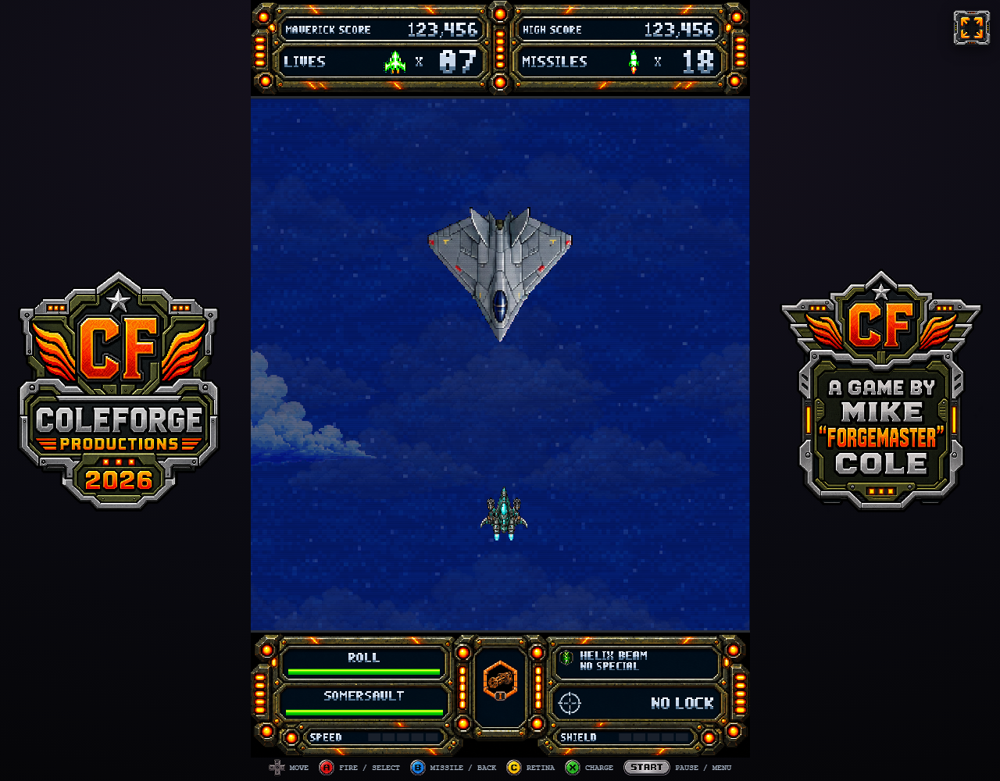

Armored Command is in.
Larger arcade stocks above the action. Clear weapon, maneuver and special readouts below. The selected design is now connected to live gameplay and both co-op seats.

Armored Command
Lives and missiles have their own large number wells under the score. Roll, Somersault, weapon, special, lock, speed and shield stay visible. The radar is removed.
The artwork keeps its proportions. Each co-op seat reads its own inventory.
View the two-player HUD at full resolution
Inspect the authored frames
Ten new 16-pose banks and a separate modular carrier kit. Scrub or use onion skinning to inspect alignment. The drone and hammer use a return playback for pose review; their encounter controllers select the actual attack poses.
Loading artwork…
- Frame
- Canvas
- Anchor
- Source
Onion mode overlays the two previous poses at the same physical anchor. No per-frame resizing, hull warping or interpolated duplicate drawings.
Open current shipping PNGEncounter changes
Weapon upgrades that read clearly
Actual ships. A concealed threat.
Verification and remaining review
Loading the verification record…
- The launch-to-play probe measures the ship at the same 60 px height throughout the transition.
- Ordinary spread pellets travel about 25% slower. Their firing cadence and per-pellet damage remain unchanged.
- Native checks are bounded encounter and rendering fixtures, not a human campaign clear.
- The timestamped ledger records anything not yet established, including the two small Stage 6 shapes that match spinning missile-ammo drops.